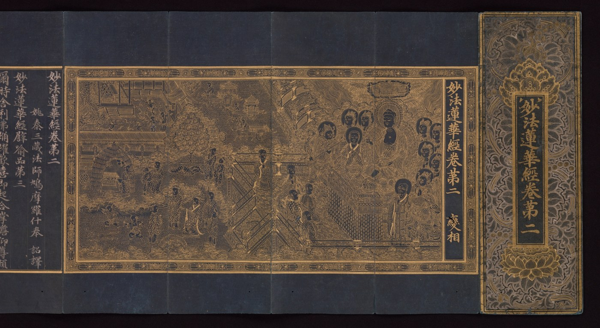

The text in brief
One destination, different ways to teach
Children are playing in a burning house. Their father warns them, but they keep playing. He promises carts drawn by goats, deer or oxen. They run outside. Once safe, each receives a magnificent ox cart. The different promises show skillful means. The father knows what will reach each child. The equal gift is the One Vehicle, the Buddha’s teaching that leads everyone to buddhahood. Chapter 3
The Buddha is still teaching
Shakyamuni, the Buddha who speaks in the sutra, says he awakened countless ages ago. He lets people see him pass away because, if they thought their teacher would always be there, they might never act on what he taught. Chapter 16
How to treat a future buddha
A monk called Never Disparaging bows to everyone he meets, even people who insult him. He believes every one of them will become a buddha. The sutra also asks its listeners to read it aloud, copy it and teach it to others. Chapter 20 · Chapter 10

